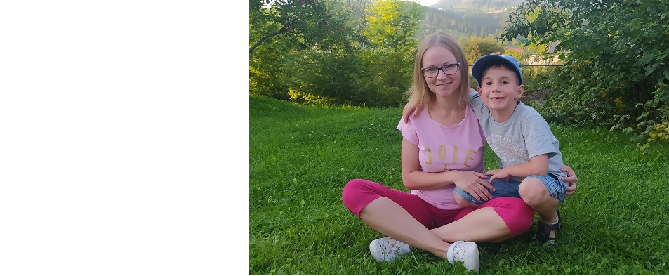

Як стати хорошою мамою - основні правила
Спитайте будь-яку жінку, як це, бути мамою, і вона обов'язково розповість, як вона це бачить. Скільки матерів, стільки і любові, стільки і відповідей на одне і те ж саме питання.
Бути мамою – важке завдання
Бути мамою – це бути світом, Всесвітом для однієї людинки. І у цій дії поєднуються щастя та відповідальність, у першу чергу, за себе та за свої емоції: «Що ти несеш та що даєш дитині?». Це подорож довжиною у нескінченність, де ти наново зустрічаєшся із собою справжньою.
Бути мамою – це означає перейти на інший рівень відчуття та сприйняття цього світу. Це коли ти щодня оточуєш маленьку людинку любов’ю та теплом, допомагаєш їй розвиватися, а не розчиняєшся у ній. І кожен новий день приносить море відкриттів для обох: і для дитини, і для мами.
Правило 1: Якомога частіше спілкуйтеся з дитиною
Діти завжди націлені на якість, а не на кількість.Тому просто необхідно відчувати, чого ваша дитина потребує більше. Якщо задовольнити найважливішу потребу дитини – спілкування та увагу, то поряд з вами ростиме здорова, щаслива, розумна, спокійна дитина. Чим менша дитина, тим менше вона є самодостатньою. Для відчуття щастя, мамі необхідно якомога більше знаходитися поряд з дитиною та спілкуватися з нею. З віком часу для спілкування потрібно все менше і менше. Та навіть школяру необхідна щонайменше година, протягом якої мама б посиділа поряд, спитала як справи, як відносини з друзями.
У кожної дитини є невід’ємне право на проведення часу з мамою. І як цей час провести, ви, жінки, обираєте самі: поговорити з подругою, сходити по магазинах чи поспілкуватися з дитиною. Адже саме мама формує світ дитини. Тому перше правило – розмовляйте зі своїми дітьми.
Правило 2: Бути послідовною
Усі діти режимні. Проте цей режим, особливо у перший час, залежить від дорослих. Тому мамі треба вчитися бути послідовною. Завдяки режиму, діти відчувають безпеку навколо себе, і у них формується відчуття порядку. Чіткі правила допомагають сформувати особистісні межі та мінімізувати конфлікти. При цьому, мамі важливо самій відчувати час, дотримуватися порядку, а також бути терплячою, аби щоразу пояснювати дитині, чому не можна робити так чи інакше, наприклад, підіймати руку. Тому мама виступає транслятором тих емоцій, які дитина лише вчиться розуміти та приймати.
Правило 3: За будь-якої можливості проявляти свою любов
Що ж стосується любові, то ми любимо без оцінювання, тому наступне правило гарної мами говорить: проявляйте свою любов та не приховуйте емоцій. Дитина відчуває усе через тіло та часом слова непотрібні, аби зрозуміти сердитеся Ви чи літаєте від щастя, адже мама і тато – маяк, на який спрямовується малюк. Тому, коли від дітей нічого не приховується, то і вони, у свою чергу, не бояться говорити та відчувати. І навпаки, критика на адресу дитини формує у неї засудження інших, тому частіше хваліть ваших дітей. Адже похвала надає крила, і не варто їх підрізати, особливо, ще жодного разу не злетівши.
Акцентуйте більше уваги на позитиві, хоча говорити «ні» теж важливо, та закінчувати завжди варто на позитивній ноті. Адже якщо ти «плюс», то і я «плюс». Заражайте своїх дітей ідеями, та не нав’язуйте їм своєї точки зору, нехай вони обирають своє. І пам’ятайте, чим більше гри буде у житті дитини, тим більшим буде у неї вибір у майбутньому, тому важливо підтримувати починання ваших дітей.
Правило 4: Бути інформативною
Навчіться слухати свою інтуїцію, адже вона, часом, краща за будь-яку інформацію, написану у книгах. Проте і володіти якісною інформацією необхідно.
Зараз є багато книг про виховання дітей. Читайте, вчіться працювати над собою та визнавати власні помилки, адже Ви є прикладом для своєї дитини. Тож, рухаючись уперед, до знань, Ви завжди будете йти в ногу зі своїми дітьми, і вони зрозуміють, що вас не обдурити, оскільки мама знає все. Ненав’язливо, із зацікавленістю, та одночасно даючи дитині право вибору, пропонуйте їй той чи інший варіант вирішення чи висувайте свої умови. Головне, не бійтеся чогось не знати, адже визнаючи це і починаючи діалог, Ви, навпаки, виростете в очах дитини.
Правило 5: Давати собі можливість перепочити
Пам’ятайте про відпочинок. Правило просте: влаштовувати собі перепочинок. Бути мамою 24/7 не треба, бо інакше швидко з’явиться емоційне виснаження. Турбота про інших починається з турботи про себе, оскільки так Ви вчите дитину відчувати та розділяти свої потреби. Вона розумітиме, що і у інших є власний простір. Інша людина також може чогось хотіти, та ці бажання не завжди співпадають із бажаннями малюка. До того ж, дитина вчитиметься розділяти власні бажання та вчитися знаходити час для свого відпочинку. У протилежному випадку може сформуватися перегин, коли дитина завжди бачить «маму-живчика», та в один чудовий момент батарейка сідає, то у дитини може створитися логічний ланцюжок «мама втомилася і, скоріше за все, через мене». Це, у свою чергу, може відлякати вашого малюка проявляти активність та, загалом, яскраві емоції.
Правило 6: Вчитися на власних помилках
Ми часто озираємося навколо, відволікаючись та замислюючись, що скажуть інші люди. Робіть помилки, адже це життя. І вчіться на власних помилках. Дитині треба бачити, як Ви впораєтеся з труднощами. І у вас неодмінно буде ще один шанс. Діти часто бешкетують та обіцяють, що більше цього не робитимуть, та через деякий час усе повторюється. Ці уроки потрібні вам обом, як дорослому, так і дитині. Втім, у кожного ці уроки – свої. Однією чи кількома помилками не зруйнувати того, що Ви вже побудували. Робіть висновки, у протилежному випадку так і ходитимете по колу, а батьківство – це рух по спіралі вгору.
Правило 7: Залишатися завжди впевненою у собі
Гарна мама та ідеальна мама, у чому різниця? Як гадаєте? Просто ідеал – це вигадка, ілюзія. А гарна мама була, є і буде. У нас, у кожного, загалом, своє розуміння гарного. І мама у кожного своя: така любляча, турботлива, ніжна. Повірте у себе та у свої сили, а також у те, що Ви – гарна мама. Ви не можете перелюбити свою дитину – ви дасте стільки любові, скільки у вас є. А з появою малюка вашої любові просто стає більше. Часто говоріть вашій дитині «Я люблю тебе». Частіше обіймайте її, питайте за вечерею як пройшов її день, та створіть ритуали перед сном. Хваліть дитину при інших людях та говоріть їй «дякую». Вмійте пробачати та навчайте просити вибачення.
Цінуйте кожну мить, адже завтра може не настати ваша дитина буде вже іншою.
